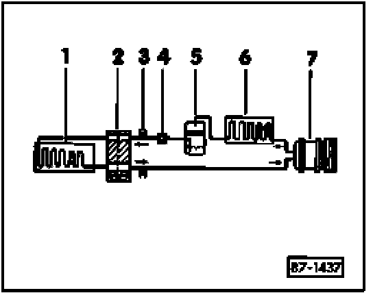

A/C Refrigerant System, Identification
A/C Refrigerant System, Identification
NOTE: Before carrying out any work on the A/C refrigerant system, refer to all CAUTIONS and WARNINGS in A/C refrigerant system safety measures.
A/C refrigerant system is charged with refrigerant R-134a.
A label specifying refrigerant type may be located on the compressor or radiator support.
A/C refrigerant circuit with expansion valve and receiver drier

1. Evaporator
2. Expansion valve
3. High pressure service valve
4. Sight glass (if equipped)
5. Receiver drier
6. Condenser
7. Compressor
NOTE: Arrows indicate direction of refrigerant flow.